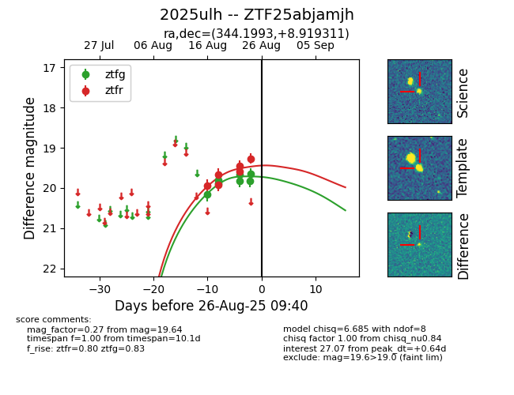

Target 2025ulh at 2025-08-26 09:40, see:
FINK: fink-portal.org/ZTF25abjamjh
Lasair: lasair-ztf.lsst.ac.uk/objects/ZTF25abjamjh
ALeRCE: alerce.online/object/ZTF25abjamjh
TNS: wis-tns.org/object/2025ulh
YSE: ziggy.ucolick.org/yse/transient_detail/2025ulh
alt names
ZTF25abjamjh (ztf,fink)
2025ulh (tns,yse)
coordinates:
equatorial (ra, dec) = (344.1993,+8.91931)
galactic (l, b) = (81.3103,-44.49167)
photometry
last ztfg=19.64, ztfr=19.27
7 ztfg, 6 ztfr detections
